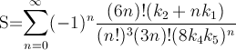
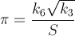
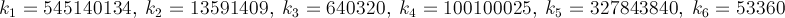

I'm looking for the fastest way to obtain the value of π, as a personal
challenge. More specifically, I'm using ways that don't involve using
#define constants like M_PI, or hard-coding the number in.
The program below tests the various ways I know of. The inline assembly
version is, in theory, the fastest option, though clearly not portable. I've
included it as a baseline to compare against the other versions. In my tests,
with built-ins, the 4 * atan(1) version is fastest on GCC 4.2, because it
auto-folds the atan(1) into a constant. With -fno-builtin specified, the
atan2(0, -1) version is fastest.
Here's the main testing program (pitimes.c):
#include <math.h>
#include <stdio.h>
#include <time.h>
#define ITERS 10000000
#define TESTWITH(x) { \
diff = 0.0; \
time1 = clock(); \
for (i = 0; i < ITERS; ++i) \
diff += (x) - M_PI; \
time2 = clock(); \
printf("%s\t=> %e, time => %f\n", #x, diff, diffclock(time2, time1)); \
}
static inline double
diffclock(clock_t time1, clock_t time0)
{
return (double) (time1 - time0) / CLOCKS_PER_SEC;
}
int
main()
{
int i;
clock_t time1, time2;
double diff;
/* Warmup. The atan2 case catches GCC's atan folding (which would
* optimise the ``4 * atan(1) - M_PI'' to a no-op), if -fno-builtin
* is not used. */
TESTWITH(4 * atan(1))
TESTWITH(4 * atan2(1, 1))
#if defined(__GNUC__) && (defined(__i386__) || defined(__amd64__))
extern double fldpi();
TESTWITH(fldpi())
#endif
/* Actual tests start here. */
TESTWITH(atan2(0, -1))
TESTWITH(acos(-1))
TESTWITH(2 * asin(1))
TESTWITH(4 * atan2(1, 1))
TESTWITH(4 * atan(1))
return 0;
}
And the inline assembly stuff (fldpi.c) that will only work for x86 and x64
systems:
double
fldpi()
{
double pi;
asm("fldpi" : "=t" (pi));
return pi;
}
And a build script that builds all the configurations I'm testing
(build.sh):
|
#!/bin/sh
|
|
gcc -O3 -Wall -c -m32 -o fldpi-32.o fldpi.c
|
|
gcc -O3 -Wall -c -m64 -o fldpi-64.o fldpi.c
|
|
|
|
gcc -O3 -Wall -ffast-math -m32 -o pitimes1-32 pitimes.c fldpi-32.o
|
|
gcc -O3 -Wall -m32 -o pitimes2-32 pitimes.c fldpi-32.o -lm
|
|
gcc -O3 -Wall -fno-builtin -m32 -o pitimes3-32 pitimes.c fldpi-32.o -lm
|
|
gcc -O3 -Wall -ffast-math -m64 -o pitimes1-64 pitimes.c fldpi-64.o -lm
|
|
gcc -O3 -Wall -m64 -o pitimes2-64 pitimes.c fldpi-64.o -lm
|
|
gcc -O3 -Wall -fno-builtin -m64 -o pitimes3-64 pitimes.c fldpi-64.o -lm
|
Apart from testing between various compiler flags (I've compared 32-bit
against 64-bit too because the optimizations are different), I've also tried
switching the order of the tests around. But still, the atan2(0, -1) version
still comes out on top every time.
Answer
The Monte Carlo method, as mentioned, applies some great concepts but it is,
clearly, not the fastest, not by a long shot, not by any reasonable measure.
Also, it all depends on what kind of accuracy you are looking for. The fastest
π I know of is the one with the digits hard coded. Looking at Pi and Pi[PDF],
there are a lot of formulae.
Here is a method that converges quickly — about 14 digits per iteration.
PiFast, the current fastest application, uses this formula with the FFT. I'll
just write the formula, since the code is straightforward. This formula was
almost found by Ramanujan and discovered by Chudnovsky. It is actually how he
calculated several billion digits of the number — so it isn't a method to
disregard. The formula will overflow quickly and, since we are dividing
factorials, it would be advantageous then to delay such calculations to remove
terms.


where,

Below is the Brent–Salamin algorithm. Wikipedia mentions that when a and
b are "close enough" then (a + b)² / 4t will be an approximation of π.
I'm not sure what "close enough" means, but from my tests, one iteration got 2
digits, two got 7, and three had 15, of course this is with doubles, so it
might have an error based on its representation and the true calculation
could be more accurate.
let pi_2 iters =
let rec loop_ a b t p i =
if i = 0 then a,b,t,p
else
let a_n = (a +. b) /. 2.0
and b_n = sqrt (a*.b)
and p_n = 2.0 *. p in
let t_n = t -. (p *. (a -. a_n) *. (a -. a_n)) in
loop_ a_n b_n t_n p_n (i - 1)
in
let a,b,t,p = loop_ (1.0) (1.0 /. (sqrt 2.0)) (1.0/.4.0) (1.0) iters in
(a +. b) *. (a +. b) /. (4.0 *. t)
Lastly, how about some pi golf (800 digits)? 160 characters!
int a=10000,b,c=2800,d,e,f[2801],g;main(){for(;b-c;)f[b++]=a/5;for(;d=0,g=c*2;c-=14,printf("%.4d",e+d/a),e=d%a)for(b=c;d+=f[b]*a,f[b]=d%--g,d/=g--,--b;d*=b);}
Suggest
I really like this program, because it approximates π by looking at its own
area.
IOCCC 1988 : westley.c
#define _ -F<00||--F-OO--;
int F=00,OO=00;main(){F_OO();printf("%1.3f\n",4.*-F/OO/OO);}F_OO()
{
_-_-_-_
_-_-_-_-_-_-_-_-_
_-_-_-_-_-_-_-_-_-_-_-_
_-_-_-_-_-_-_-_-_-_-_-_-_-_
_-_-_-_-_-_-_-_-_-_-_-_-_-_-_
_-_-_-_-_-_-_-_-_-_-_-_-_-_-_
_-_-_-_-_-_-_-_-_-_-_-_-_-_-_-_
_-_-_-_-_-_-_-_-_-_-_-_-_-_-_-_
_-_-_-_-_-_-_-_-_-_-_-_-_-_-_-_
_-_-_-_-_-_-_-_-_-_-_-_-_-_-_-_
_-_-_-_-_-_-_-_-_-_-_-_-_-_-_
_-_-_-_-_-_-_-_-_-_-_-_-_-_-_
_-_-_-_-_-_-_-_-_-_-_-_-_-_
_-_-_-_-_-_-_-_-_-_-_-_
_-_-_-_-_-_-_-_
_-_-_-_
}